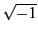

suivant: Quelques exemples
monter: Programmation
précédent: Programmation
Table des matières
Index
Xcas permet d'écrire des programmes, comme n'importe quel
langage de programmation. Voici ses
principales caractéristiques.

- C'est un langage fonctionnel. L'argument d'une fonction peut être
une autre fonction. Si c'est le cas, on peut soit donner le nom de la
fonction argument dans la commande, soit sa définition : par exemple
function_diff(f) ou bien function_diff(x->x^2).
- Il n'y a pas de distinction entre programme et fonction :
une fonction renvoie la valeur de la dernière instruction
évaluée ou ce qui suit le mot réservé
return.
Comme pour tous les environnements de calcul, programmer
consiste à étendre Xcas en lui rajoutant les fonctions
souhaitées. Structurer la programmation consiste à hiérarchiser
les différentes fonctions qui s'appellent entre elles.
- Le langage est non typé. On distingue seulement les
variables globales, qui ne sont pas déclarées,
et les variables locales,
déclarées en début de fonction.
Dans un programme, lorsqu'on appelle une variable munie d'un indice qui n'est
pas affectée à une liste, séquence ou matrice,
c'est une table qui est créée, et non une liste.
Une table est un conteneur d'objets analogue aux listes et aux
séquences. La différence est qu'elle peut être indicée
par autre chose qu'un entier, par exemple
une chaîne de caractères...
Si a est une variable formelle, la commande a[4]:=2
crée une table a.
Pour que a soit une liste, il faut d'abord affecter a
à une liste par exemple a:=[0$10]
(si la taille de la liste est connue) ou a:=[] puis
a[4]:=2.
Même si le langage est non typé, il est donc
recommandé d'initialiser
les variables avant de les utiliser.
La syntaxe de déclaration d'une fonction est la suivante.
nom_fonction(var1,var2,...):={
local var_loc1, var_loc2,... ;
instruction1;
instruction2;
...
}
La syntaxe est soit avec des mots clef en
français soit celle du langage C++.
| Instructions en fançais |
| affectation |
a:=2; |
| entrée expression |
saisir("a=",a); |
| entrée chaine |
saisir_chaine("a=",a); |
| sortie |
afficher("a=",a); |
| valeur retournée |
retourne(a); |
| arrêt dans boucle |
break; |
| alternative |
si <condition> alors <inst> fsi; |
| |
si <condition> alors <inst1> sinon <inst2> fsi; |
| boucle pour |
pour j de a jusque b faire <inst> fpour; |
| |
pour j de a jusque b pas p faire <inst> fpour; |
| boucle répéter |
repeter <inst> jusqua <condition>; |
| boucle tantque |
tantque <condition> faire <inst> ftantque; |
| boucle faire |
faire <inst1> si <condition> break;<inst2> |
| |
ffaire; |
| Instructions comme en C++ |
| affectation |
a:=2; |
| entrée expression |
input("a=",a); |
| entrée chaine |
textinput("a=",a); |
| sortie |
print("a=",a); |
| valeur retournée |
return(a); |
| arrêt dans boucle |
break; |
| alternative |
if (<condition>) {<inst>}; |
| |
if (<condition>) {<inst1>} else {<inst2>}; |
| boucle pour |
for (j:= a;j<=b;j++) {<inst>}; |
| |
for (j:= a;j<=b;j:=j+p) {<inst>}; |
| boucle répéter |
repeat <inst> until <condition>; |
| boucle tantque |
while (<condition>) {<inst>}; |
| boucle faire |
do <inst1> if (<condition>) break;<inst2> od; |
Pour les tests, une condition est un booléen,
résultat d'une expression logique, utilisant les
opérateurs habituels.
| Opérateurs logiques |
|
|
== |
teste l'égalité |
!= |
teste la différence |
< |
teste la stricte infériorité |
> |
teste la stricte supériorité |
<= |
teste l'infériorité ou l'égalité |
>= |
teste la supériorité ou l'égalité |
&&, et |
opérateur booléen infixé et |
||, ou |
opérateur booléen infixé ou |
vrai |
est le booléen true ou 1 |
faux |
est le booléen false ou 0 |
non, ! |
inverse logique |
|
|
Attention, i désigne  et ne peut pas être
utilisé comme variable de boucle.
L'instruction break; permet de sortir d'une boucle
et continue; de passer immédiatement à l'itération
suivante.
De nombreuses variantes sont reconnues en particulier en mode
de compatibilité avec Maple, Mupad et les TI89/Voyage 200.
On peut capturer des erreurs d'exécution par
try {bloc_erreurs_capturees}
catch (variable)
{bloc_execute_si_erreur}
Par exemple :
try{A:=idn(2)*idn(3)}
catch(erreur)
{print("l'erreur est "+erreur)}
suivant: Quelques exemples
monter: Programmation
précédent: Programmation
Table des matières
Index
Documentation de giac écrite par Renée De Graeve